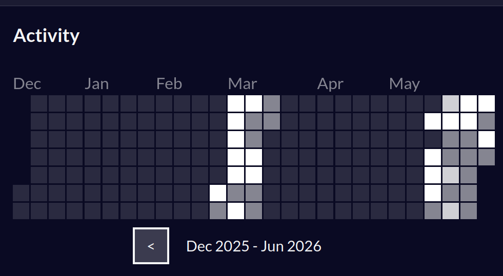

El porvenir es largo

He escrito ya esta página, te juro al menos más de 4 veces, había escrito
sobre lo frustrado que
estaba al vivir una vida como agente de customer service aguantando clientes todo el tiempo. Más sin
embargo, los escritos y parrafos siempre me quedaban raros, según la inteligencia artifical debía
usar el:
'whitespace:pre-line'pero el párrafo se veía bien horrible, debido a que el editor de código
hacía wrap al momento de usar prettier.
Pronto te das cuenta que es mejor usar `<br>` ejeejje.
Ya llevo casi un mes desde que emprendí este viaje, desde finales de mayo, me he comprometido a
aprender a programar de una vez por todas a través de freecodecamp y no voy nisiquiera saliendo de
la parte Responsive Web Design
De todos modos a diferencia de anteriores intentos de aprender a programar: estoy escribiendo mi
blog para poner en práctica
todo lo que he aprendido.
Debido a que antes, trataba de hacer un speedrun de aprender a programar, más sin embargo cuando me
enfrentaba frente al Visual Studio Code, me daba cuenta de todo lo que no se me
había retenido, lo cuál decidí que mejor era hacer mi propia página y mis propios proyectos en vez
de enfocarme en la "teoría".
Si te lo pones a pensar la programación es una habilidad práctica, por más que la inteligencia
artificial te haga el trabajo, tarde o temprano te verás enfrentado con el código espagetti, pues
de la misma manera la inteligencia artificial te ayuda a crear textos enormes para rellenar lo
explicado; también te escribe más código del que debería, lo cuál al mantenerlo lo hace, en lo
personal, bastante inteligible.
Al principio intenté usar IA para apoyarme pero realmente entre más avanzaba más difícil se me hacía
entender mi propio programa.
Por lo tanto borré todo y solamente usaba papagoogle para buscar lo que realmente, genuinamente no
recordaba y no entendía
En lo personal traté de hacer la inteligencia artifical mi coopiloto. Pero la verdad, aunque
escribiera a puño y letra el código, realmente no me sentía que estuviera aprendiendo
Se está abusando de la IA
Siguiendo el tema anterior, el uso de la inteligencia artíficial es
bastante nocivo para el agua y
el medio ambiente donde están puesto los datacenters, pues la avaricia y el progreso han chocado
contra el aire, el agua y el monte.
En instagram no paro de ver estúpidos enseñando claude pero me pregunto ¿Realmente
me ayuda usar inteligencia artificial?.
Desde que uso esta novedosa tecnología, la mejor de esta década, me he dado cuenta que el cerebro se
empieza a atrofiar, he estado estudiando en el S E N A en el curso de Analísis
y Desarrollo de
Software y me he dado cuenta que entre más uso la IA, más difícil es separarme de ella.
Los compañeros también usan un montón esta tecnología, relamente para cualquier trabajo de diseño y
realmente todo es tan parecido que se ve un poco raro.
Siendo sincero, toda esta tecnología va hacernos dependientes para que no podamos vivir sin ella y
luego cobrarnos por su uso. Por lo mejor es aprender a hacer este tipo de cosas pues el futuro es
digital.
Conclusión
En conclusión. Cualquier cambio de vida es totalmente difícil, pero no imposible, desde ser gordo a ser musculoso hasta ser un estúpido agente de customer service a programador con buen sueldo, los cambios son complejos y son difíciles. Los atajos en la vida como la inteligencia artificial o estéticas como la lipo, por ejemplo. No solo hacen que sea incipida la victoria sino poco sostenible en el tiempo.